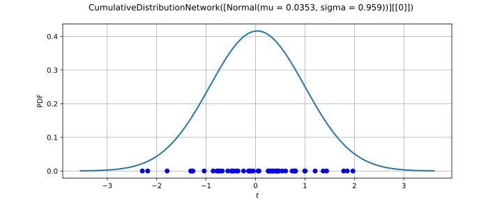

CumulativeDistributionNetworkFactory¶
(Source code, svg)

- class CumulativeDistributionNetworkFactory(*args)¶
Factory of cumulative distribution networks.
Warning
This class is experimental and likely to be modified in future releases. To use it, import the
openturns.experimentalsubmodule.Two estimation modes are available:
when the graph is given, only the parameters of the factor distributions are estimated;
when bounds on the graph characteristics are given instead, the graph and the factor distributions are estimated from the sample.
In the fixed-graph mode, each red node is associated with a parametric family, given by a template distribution: the estimated factor has the same type as its template and receives the corresponding parameters. The parameter vector is the concatenation, in graph order, of the parameters
![\vect{\theta}_i]() of the factors, as returned by
of the factors, as returned by getParameter(). The estimate maximizes the exact log-likelihood of the network:![\hat{\vect{\theta}} = \arg\max_{\vect{\theta}} \frac{1}{n}\sum_{k=1}^n \log f(\vect{x}_k;\vect{\theta})]()
where
![f]() is the network density, obtained from the mixed derivative of the product of the factor CDFs [huang2011], and not from the product of the factor densities.
The maximization is performed by an
is the network density, obtained from the mixed derivative of the product of the factor CDFs [huang2011], and not from the product of the factor densities.
The maximization is performed by an OptimizationAlgorithm(TNCby default) using theMaximumLikelihoodFactory-*ResourceMapkeys, see the Notes section.In the structure-learning mode, only block-independent networks are considered: the cliques of the factors form a partition of the variables, so the network CDF factorises over the blocks. The factor distributions are selected among the continuous univariate and multivariate factories using
BestModelBIC(), and the partition is grown greedily by merging blocks while the BIC of the network improves. A multivariate block is modelled either by a multivariate factory or by univariate marginals and a copula estimated on the pseudo-observations.- Available constructors:
CumulativeDistributionNetworkFactory(graph, distributions)
CumulativeDistributionNetworkFactory(minimumFactorNumber, maximumFactorNumber, maximumFactorDimension)
- Parameters:
- graph
BipartiteGraph Bipartite graph defining the network. Its red nodes are the factors and the clique of a red node gives the global indices of its variables.
- distributionslist of
Distribution Template distribution of each factor, in graph order. The
![i]() th distribution must have the dimension of the th clique.
Its parameters are used as the starting point of the optimization.
th distribution must have the dimension of the th clique.
Its parameters are used as the starting point of the optimization.- minimumFactorNumberint
Minimum number of factors (red nodes) of the estimated graph. It must be positive and not greater than the sample dimension.
- maximumFactorNumberint
Maximum number of factors (red nodes) of the estimated graph. It must be greater than or equal to minimumFactorNumber.
- maximumFactorDimensionint
Maximum number of variables in a factor, i.e. the maximum clique size. It must be positive.
- graph
Methods
build(*args)Estimate the distribution.
buildEstimator(sample)Estimate the distribution and its parameter distribution.
Accessor to the bootstrap size.
Accessor to the object's name.
Get the template distributions of the factors.
getGraph()Get the bipartite graph defining the network.
Accessor to the known parameters indices.
Accessor to the known parameters values.
Get the maximum dimension of a factor of the estimated graph.
Get the maximum number of factors of the estimated graph.
Get the minimum number of factors of the estimated graph.
getName()Accessor to the object's name.
Get the optimization algorithm.
Get the optimization bounds.
Get the number of parameters of the network.
Get the starting point of the optimization.
hasName()Test if the object is named.
Whether the graph is estimated from the sample.
setBootstrapSize(bootstrapSize)Accessor to the bootstrap size.
setDistributionCollection(distributions)Set the template distributions of the factors.
setGraph(graph)Set the bipartite graph defining the network.
setKnownParameter(positions, values)Accessor to the known parameters.
setName(name)Accessor to the object's name.
setOptimizationAlgorithm(solver)Set the optimization algorithm.
setOptimizationBounds(bounds)Set the optimization bounds.
setStartingPoint(startingPoint)Set the starting point of the optimization.
Notes
In the fixed-graph mode, the joint distribution is estimated consistently, but the split of the density between the factors may be weakly identified: several parameter vectors can produce nearly the same joint law, especially when a variable belongs to many cliques. This happens even for a tree, where the factor CDFs are not the clique marginals of the joint distribution. In that case the estimated factor parameters must not be interpreted individually, and confidence intervals obtained from
buildEstimator()may be wide.The parameters are optimized in their natural parametrization: no transformation is applied. When the admissible set of a factor is not the full space (for example the standard deviation of a normal factor must be positive), it is recommended to provide both a relevant starting point and relevant bounds.
The following
ResourceMapkeys are used:MaximumLikelihoodFactory-DefaultOptimizationAlgorithm(String, default:TNC): name of the default optimization algorithm.MaximumLikelihoodFactory-MaximumCallsNumber(UnsignedInteger, default:1000): maximum number of calls to the objective function.MaximumLikelihoodFactory-MaximumAbsoluteError(Scalar, default:1.0e-10): absolute convergence tolerance.MaximumLikelihoodFactory-MaximumRelativeError(Scalar, default:1.0e-10): relative convergence tolerance.MaximumLikelihoodFactory-MaximumObjectiveError(Scalar, default:1.0e-10): objective convergence tolerance.MaximumLikelihoodFactory-MaximumConstraintError(Scalar, default:1.0e-10): constraint convergence tolerance.
In the structure-learning mode, the BIC of a block-independent network is the sum of the BICs of its blocks, so the score is exact for a given partition and the search is greedy over the partitions. The search does not consider overlapping factors: every variable belongs to exactly one factor. The factor distributions are selected among the parametric factories returned by
GetContinuousUniVariateFactories()andGetContinuousMultiVariateFactories(); the non-parametric histogram and Bernstein copula factories are excluded. The BIC is also used to select the factor distributions, so the reported criterion is optimistic for the selected model, and the structure may be weakly identified when several partitions have close BIC values.buildEstimator()is not available in this mode because the dimension of the parameter depends on the estimated structure. The search fits every candidate block, so its cost grows quickly with the sample dimension; it is intended for moderate dimensions.Examples
Estimate the two factors of a network with independent variables:
>>> import openturns as ot >>> import openturns.experimental as otexp >>> ot.RandomGenerator.SetSeed(0) >>> graph = ot.BipartiteGraph([[0], [1]]) >>> reference = ot.CumulativeDistributionNetwork([ot.Normal(), ot.Normal()], graph) >>> sample = reference.getSample(200) >>> factory = otexp.CumulativeDistributionNetworkFactory(graph, [ot.Normal(), ot.Normal()]) >>> estimated = factory.build(sample) >>> estimated.getDimension() 2
Estimate the graph and the factor distributions of a network from a sample:
>>> factory = otexp.CumulativeDistributionNetworkFactory(1, 3, 2) >>> estimated = factory.build(sample) >>> estimated.getDimension() 2
- __init__(*args)¶
- build(*args)¶
Estimate the distribution.
Available usages:
build()
build(sample)
build(parameters)
- Parameters:
- sample2-d sequence of float
Sample of the network. In the fixed-graph mode, its dimension must be the number of black nodes of the graph. In the structure-learning mode, its dimension is the number of variables of the network.
- parameterssequence of float
Concatenation, in graph order, of the parameters of the factor distributions.
- Returns:
- distribution
CumulativeDistributionNetwork The network built with the estimated parameters.
In the first usage, the network is built with the parameters of the template distributions. In the second usage, the parameters are estimated by maximum likelihood in the fixed-graph mode, or the graph and the factor distributions are estimated in the structure-learning mode. In the third usage, the given parameters are used as is.
- distribution
Notes
In the fixed-graph mode, the sample dimension must match the number of black nodes of the graph, and its size must be positive. An
InvalidArgumentExceptionis raised if the graph and the template distributions are inconsistent, or if the parameter size does not matchgetParameterDimension().In the structure-learning mode, only the second usage is available. The sample size must be positive, the minimum number of factors must not exceed the sample dimension, and the bounds must be compatible with a partition of the variables.
- buildEstimator(sample)¶
Estimate the distribution and its parameter distribution.
- Parameters:
- sample2-d sequence of float
Sample of the network, of dimension the number of black nodes of the graph.
- Returns:
- result
DistributionFactoryResult The result contains the estimated distribution and the distribution of its parameter, estimated by bootstrap.
- result
See also
Notes
The number of bootstrap resamples is given by
getBootstrapSize(). Because the factor parameters may be weakly identified on a cyclic graph, the bootstrap distribution of the parameter can be wide even when the joint distribution is well estimated.This method is not available in the structure-learning mode, because the dimension of the parameter depends on the estimated graph.
- getBootstrapSize()¶
Accessor to the bootstrap size.
- Returns:
- sizeint
Size of the bootstrap.
- getClassName()¶
Accessor to the object’s name.
- Returns:
- class_namestr
The object class name (object.__class__.__name__).
- getDistributionCollection()¶
Get the template distributions of the factors.
- Returns:
- distributionslist of
Distribution The template distributions, in graph order. Changing an element of the returned list does not modify the factory.
- distributionslist of
Notes
In the structure-learning mode, the templates are not used and an empty list is returned.
- getGraph()¶
Get the bipartite graph defining the network.
- Returns:
- graph
BipartiteGraph The graph whose red node
is linked to the variables of the th factor.
- graph
Notes
This method is not available in the structure-learning mode: the graph is estimated by
build()and is available from the returned distribution.
- getKnownParameterIndices()¶
Accessor to the known parameters indices.
- Returns:
- indices
Indices Indices of the known parameters.
- indices
- getKnownParameterValues()¶
Accessor to the known parameters values.
- Returns:
- values
Point Values of known parameters.
- values
- getMaximumFactorDimension()¶
Get the maximum dimension of a factor of the estimated graph.
- Returns:
- maximumFactorDimensionint
Maximum number of variables in a factor.
- getMaximumFactorNumber()¶
Get the maximum number of factors of the estimated graph.
- Returns:
- maximumFactorNumberint
Maximum number of red nodes of the estimated graph.
- getMinimumFactorNumber()¶
Get the minimum number of factors of the estimated graph.
- Returns:
- minimumFactorNumberint
Minimum number of red nodes of the estimated graph.
- getName()¶
Accessor to the object’s name.
- Returns:
- namestr
The name of the object.
- getOptimizationAlgorithm()¶
Get the optimization algorithm.
- Returns:
- solver
OptimizationAlgorithm The optimization algorithm used to maximize the log-likelihood.
- solver
- getOptimizationBounds()¶
Get the optimization bounds.
- Returns:
- bounds
Interval The bounds of the parameter space. An interval of dimension zero means that the optimization is unbounded.
- bounds
- getParameterDimension()¶
Get the number of parameters of the network.
- Returns:
- dimensionint
Sum of the parameter dimensions of the template distributions, in graph order. In the structure-learning mode, the graph is not known before the estimation and this method returns 0.
- getStartingPoint()¶
Get the starting point of the optimization.
- Returns:
- startingPoint
Point The starting point, in the concatenated parametrization of the factors. An empty point means that the parameters of the template distributions are used.
- startingPoint
- hasName()¶
Test if the object is named.
- Returns:
- hasNamebool
True if the name is not empty.
- isStructureLearning()¶
Whether the graph is estimated from the sample.
- Returns:
- structureLearningbool
True if the factory has been built with the bounds constructor, false if the graph has been given explicitly.
- setBootstrapSize(bootstrapSize)¶
Accessor to the bootstrap size.
- Parameters:
- sizeint
The size of the bootstrap.
- setDistributionCollection(distributions)¶
Set the template distributions of the factors.
- Parameters:
- distributionslist of
Distribution The template distributions, in graph order. The
th distribution must have the dimension of the th clique.
- distributionslist of
Notes
The consistency of the template distributions with the graph is checked when the distribution is built. The parameters of the templates are used as the starting point of the estimation. This method is not available in the structure-learning mode.
- setGraph(graph)¶
Set the bipartite graph defining the network.
- Parameters:
- graph
BipartiteGraph The new graph. It must have as many red nodes as the distribution collection, and each red node is linked to as many black nodes as the dimension of the corresponding template distribution.
- graph
Notes
The consistency of the graph with the template distributions is checked when the distribution is built. This method is not available in the structure-learning mode.
- setKnownParameter(positions, values)¶
Accessor to the known parameters.
- Parameters:
- positionssequence of int
Indices of known parameters.
- valuessequence of float
Values of known parameters.
Examples
When a subset of the parameter vector is known, the other parameters only have to be estimated from data.
In the following example, we consider a sample and want to fit a
Betadistribution. We assume that the![a]() and
and ![b]() parameters are known beforehand.
In this case, we set the third parameter (at index 2) to -1
and the fourth parameter (at index 3) to 1.
parameters are known beforehand.
In this case, we set the third parameter (at index 2) to -1
and the fourth parameter (at index 3) to 1.>>> import openturns as ot >>> ot.RandomGenerator.SetSeed(0) >>> distribution = ot.Beta(2.3, 2.2, -1.0, 1.0) >>> sample = distribution.getSample(10) >>> factory = ot.BetaFactory() >>> # set (a,b) out of (r, t, a, b) >>> factory.setKnownParameter([2, 3], [-1.0, 1.0]) >>> inf_distribution = factory.build(sample)
- setName(name)¶
Accessor to the object’s name.
- Parameters:
- namestr
The name of the object.
- setOptimizationAlgorithm(solver)¶
Set the optimization algorithm.
- Parameters:
- solver
OptimizationAlgorithm The optimization algorithm used to maximize the log-likelihood.
- solver
Notes
The problem is a maximization problem, its starting point and bounds are set by the factory. If the solver has a starting point of the expected dimension, it is used when no explicit starting point was set.
- setOptimizationBounds(bounds)¶
Set the optimization bounds.
- Parameters:
- bounds
Interval Bounds of the parameter space, in the concatenated parametrization of the factors. An interval of dimension zero means that the optimization is unbounded.
- bounds
Notes
An
InvalidArgumentExceptionis raised if the interval dimension is neither zero norgetParameterDimension().
- setStartingPoint(startingPoint)¶
Set the starting point of the optimization.
- Parameters:
- startingPointsequence of float
Starting point, in the concatenated parametrization of the factors. An empty point means that the parameters of the template distributions are used.
Notes
An
InvalidArgumentExceptionis raised if the point size is neither zero norgetParameterDimension().